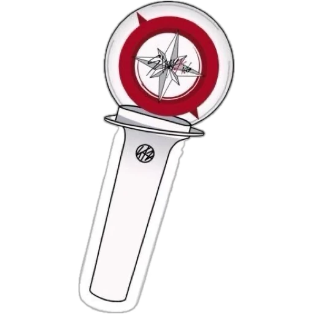

STEP OUT
WE ARE STRAY KIDS

Gli Stray Kids sono un gruppo musicale sudcoreano formatosi nel 2017 sotto la JYP Entertainment. Il gruppo è composto da otto membri: Bang Chan, Lee Know, Changbin, Hyunjin, Han, Felix, Seungmin e I.N. Il loro nome, "Stray Kids", rappresenta il concetto di giovani pronti a "perdersi" nel mondo della musica e a sfidare le convenzioni. Sono noti per la loro produzione musicale unica, che spazia tra generi come K-pop, hip hop e rock, e per il coinvolgimento attivo dei membri nella scrittura e produzione dei loro brani. Con una fanbase globale e una presenza crescente sulla scena internazionale, gli Stray Kids sono diventati simbolo di determinazione, autenticità e sperimentazione nel panorama musicale.
| 22 JULY |
Stray Kids World Tour <dominATE MADRID> |
|---|---|
| 26 JULY |
Stray Kids World Tour <dominATE PARIS> |
| 30 JULY |
Stray Kids World Tour <dominATE ROME> |
| MORE... | |